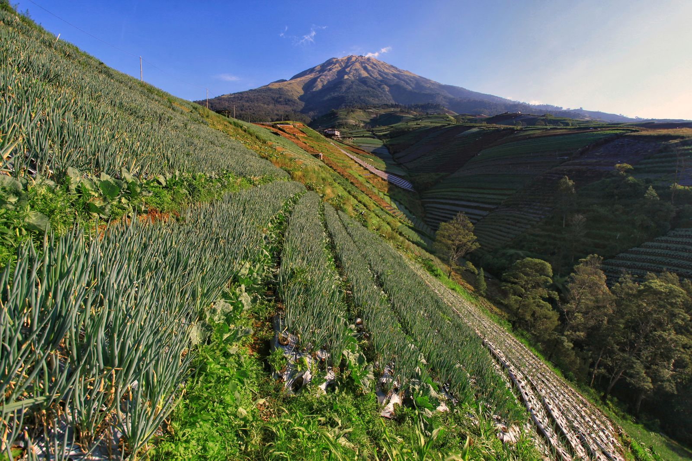
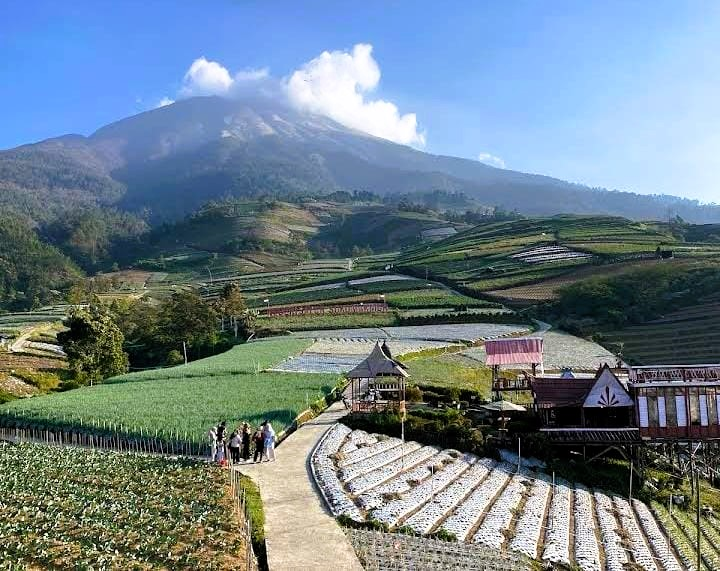
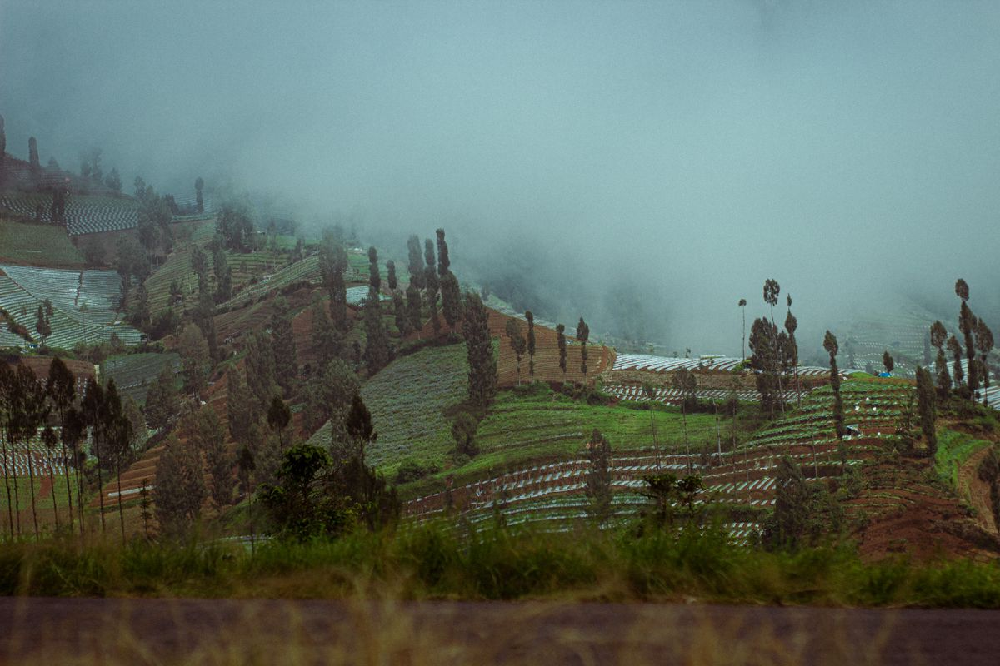

Negeri Sayur Sukomakmur

Nampan, Kajoran
Magelang, Jawa Tengah
Di lereng Sumbing, kebun sayur berundak menyimpan cerita tentang tanah, ketekunan, dan kehidupan warga.
Sebuah catatan perjalanan dari lereng Sumbing.
Ada kehidupan
di setiap undakan.
Negeri Sayur Sukomakmur berada di Dusun Nampan, Desa Sukomakmur, Kecamatan Kajoran, Kabupaten Magelang. Kebun sayur tersusun mengikuti lereng Gunung Sumbing, membentuk hamparan terasering yang menjadi ciri lanskapnya.
Di balik pemandangan itu, ada lahan yang dirawat dan kehidupan pertanian yang terus berjalan. Datanglah untuk menikmati suasananya sambil menghargai ruang kerja warga: tetap di jalur pengunjung dan minta izin sebelum mendekati lahan.


Bacaan cerita: profil desa oleh tim KKN dan cerita pertanian dari PPID Kabupaten Magelang.
Pelankan langkah.
Nikmati sekitarnya.
- Menikmati panorama
Luangkan waktu mengamati pola terasering dan lanskap lereng Sumbing dari area pengunjung.
- Membawa pulang cerita lewat foto
Ambil gambar dari jalur yang diperbolehkan, tanpa menginjak tanaman atau menghalangi jalan.
- Mengenal suasana pertanian
Amati keseharian warga dengan sopan. Minta izin sebelum memotret orang dan hormati pekerjaan mereka.
Sebelum berkunjung.
Pada layar kecil, geser tabel untuk melihat seluruh kolom.
| Fasilitas | Kegunaan | Catatan |
|---|---|---|
| Area parkir | Tempat menitipkan kendaraan saat berkunjung. | Ikuti arahan petugas dan penempatan kendaraan di lokasi. |
| Warung warga | Pilihan untuk membeli makanan dan minuman. | Ketersediaan menu dan waktu pelayanan dapat berubah. |
| Gazebo / tempat duduk | Tempat beristirahat di sela kunjungan. | Gunakan bergantian dan jaga kebersihan area bersama. |
Merujuk Koran Jakarta, 4 Januari 2025. Referensi diperiksa 16 Oktober 2026; kondisi dan ketersediaan fasilitas saat ini perlu dikonfirmasi kembali.
Tulis catatan.
Punya kesan tentang Sukomakmur atau masukan untuk website ini? Tuliskan catatanmu di formulir latihan ini.
Proyek belajar individu, bukan situs resmi pengelola wisata.
Masih di Magelang.
Tiga tempat untuk kamu kenali lebih jauh.